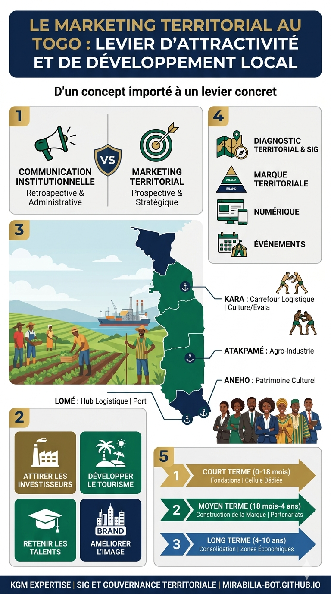

Analyse | 20 Mai 2026
Le marketing territorial dans les collectivités togolaises : d'un concept importé à un levier concret d'attractivité et de développement
Le marketing territorial reste, au Togo, l'un des concepts les mieux compris par les chercheurs et les moins pratiqués par les acteurs institutionnels. Pourtant, à l'heure où la Loi n° 2019-006 du 26 juin 2019 portant décentralisation et libertés locales redistribue les compétences de l'État vers les communes et les régions, la question de savoir comment un territoire se positionne, se différencie et se vend au sens stratégique du terme n'est plus un luxe académique. C'est une urgence de gouvernance. Les ressources propres des communes demeurent structurellement faibles, les investissements privés se concentrent sur Lomé et quelques corridors économiques, et l'exode rural vers la capitale continue de vider des localités entières de leur substance productive. Face à ce diagnostic, le marketing territorial offre une grille de lecture nouvelle et des outils concrets pour inverser ces dynamiques.

1. Ce que le marketing territorial signifie réellement
Il convient, en premier lieu, de dissiper un malentendu fréquent dans les ateliers de planification locale au Togo. Le marketing territorial n'est ni de la publicité touristique, ni un slogan peint sur un panneau d'entrée de ville, ni une campagne de relations publiques à la veille d'élections locales. C'est une démarche stratégique et managériale par laquelle un territoire (commune, région) identifie ses avantages compétitifs, segmente ses publics cibles (investisseurs, touristes, talents, résidents), construit une offre territoriale cohérente et déploie un dispositif de communication et de commercialisation pour attirer, fidéliser et retenir ces publics.
Philip Kotler, qui a introduit le concept dans le champ académique dès 1993 avec son ouvrage Marketing Places, définit le marketing des lieux comme "le processus par lequel les activités sont organisées pour créer, communiquer, délivrer et échanger des offres ayant de la valeur pour les clients d'une communauté". Cette définition, transposée au contexte togolais, implique que la commune de Kara ne se contente pas de gérer ses administrés, mais qu'elle se pense comme une entité qui doit démontrer sa valeur à un investisseur sénégalais, à un opérateur hôtelier français, à un étudiant béninois ou à un cadre togolais tentant de décider s'il rentrera au pays après ses études en Europe.
Au niveau international, la discipline a considérablement évolué depuis les années 2000. On parle aujourd'hui de place branding, la construction d'une marque territoriale à part entière, qui mobilise des méthodes empruntées au branding d'entreprise : diagnostic d'identité, positionnement, plateforme de marque, design graphique territorial, storytelling. Des villes comme Bilbao, Medellín ou Kigali sont devenues des références mondiales non pas parce qu'elles ont dépensé des budgets colossaux en communication, mais parce qu'elles ont d'abord transformé leur réalité urbaine, puis construit un récit authentique autour de cette transformation.
2. L'état des lieux dans les collectivités togolaises
Le cadre institutionnel du Togo a connu une évolution significative depuis 2019. La loi portant organisation des collectivités territoriales a formellement créé deux niveaux de collectivités, les communes et les régions, et a transféré aux premières des compétences substantielles en matière de développement économique local, de planification urbaine, d'infrastructures de proximité et de promotion du tourisme. Également, entre le transfert de compétences formelles et la capacité effective à exercer un marketing territorial, il y a un fossé que ni les textes ni les plans de développement communaux (PDC) n'ont encore comblé.
2.1 Une offre territoriale insuffisamment construite
La première condition d'un marketing territorial efficace est l'existence d'une offre territoriale clairement identifiée. Or, la plupart des PDC des communes togolaises, ceux d'Atakpamé, de Sokodé, de Tsévié ou de Vogan pour ne citer que quelques exemples récents, restent des documents de planification sectorielle qui juxtaposent des besoins en infrastructures, des projections budgétaires et des priorités de développement social, sans jamais formuler explicitement : qu'est-ce que ce territoire offre de distinctif ? À qui ? Pour quel type d'activité ? La question du positionnement concurrentiel entre territoires est absente de la quasi-totalité de ces documents.
2.2 Une fiscalité locale qui ne reflète pas l'attractivité
Les ressources propres des communes togolaises demeurent structurellement insuffisantes. Selon les données disponibles du Haut-Commissariat au Plan et du Trésor public, la part des recettes propres dans les budgets communaux oscille entre 15 % et 35 % selon les communes, le reste provenant des transferts de l'État et de l'aide extérieure. Cette dépendance financière est à la fois la conséquence et la cause d'un marketing territorial défaillant : sans ressources propres, on ne peut pas investir dans l'attractivité ; sans attractivité, on ne génère pas de ressources propres. Ce cercle vicieux est au cœur de la problématique.
2.3 L'absence d'une marque territoriale pour la majorité des communes
À ce jour, aucune commune togolaise ne dispose d'une identité visuelle et verbale cohérente et systématiquement déployée sur tous ses supports de communication (documents officiels, signalétique urbaine, site internet, réseaux sociaux, salons d'investissement). Lomé, pourtant capitale économique et vitrine internationale du pays, ne dispose pas d'une marque-ville structurée comparable à celle d'Accra ("Greater Accra, the Place to Be") ou de Lagos ("Center of Excellence"). Cette absence n'est pas anodine : elle signifie que lorsqu'un opérateur économique étranger recherche un site d'implantation en Afrique de l'Ouest, Lomé n'émerge pas comme une proposition de valeur cohérente et mémorable.
3. Exemples concrets au Togo : prémices et tentatives
Il serait inexact de conclure à l'absence totale de dynamiques de marketing territorial au Togo. Des initiatives existent, fragmentées, souvent non formalisées comme telles, portées par des acteurs parfois extérieurs aux collectivités, mais qui dessinent les contours d'une pratique émergente.
3.1 Lomé : une marque capitale en construction permanente
Lomé est le territoire togolais qui a le plus avancé dans la mise en scène de son attractivité, même si cette démarche reste largement pilotée depuis l'État central et non depuis la mairie. La Zone Franche Industrielle de Lomé, le Port Autonome de Lomé, premier port en eau profonde d'Afrique de l'Ouest, et les grands projets d'infrastructure portés par l'Agence Nationale d'Investissement et de Zones Franches (ANIZF) constituent les piliers d'un marketing territorial implicite orienté vers l'attractivité économique internationale.
Le Sommet du Groupe de la Banque Mondiale-FMI de 2017 accueilli à Lomé, tout comme les Assemblées annuelles de la Banque Africaine de Développement qu'elle a hébergées, sont des actes de marketing territorial à part entière : ils positionnent la ville sur la carte des destinations diplomatiques et économiques du continent. Ce que Lomé n'a pas encore fait, c'est transformer cet avantage de notoriété institutionnelle en une marque-ville claire, cohérente et systématiquement portée par ses propres institutions locales, la mairie en tête.
3.2 Kara : le potentiel inexploité du carrefour du Nord
Kara, deuxième ville du Togo avec une population estimée à plus de 110 000 habitants, concentre un potentiel territorial considérable que son marketing reste incapable de valoriser correctement. La ville est un carrefour logistique naturel entre le Togo, le Ghana, le Bénin et le Burkina Faso. Elle accueille l'Université de Kara, un aéroport opérationnel, un patrimoine culturel kabyè riche et les massifs montagneux d'Alédjo à proximité, un atout touristique majeur largement ignoré des circuits de promotion nationale.
Le Festival Evala, rituel de lutte traditionnelle inscrit dans la culture kabyè et reconnu par l'UNESCO comme patrimoine culturel immatériel, représente à lui seul un vecteur de marketing territorial exceptionnel. Chaque année, des milliers de visiteurs, nationaux et étrangers, convergent vers la région. Pourtant, aucune stratégie d'amplification touristique structurée n'a été déployée par la mairie de Kara pour capitaliser sur cet événement : pas de package hébergement-transport, pas de guide numérique, pas de campagne de communication préalable ciblant les opérateurs touristiques régionaux.
3.3 Atakpamé et la zone des plateaux : l'agro-industrie comme axe de positionnement
La Région des Plateaux, avec Atakpamé pour capitale préfectorale de l'Ogou, dispose d'un profil agronomique exceptionnel : pluviométrie régulière, sols fertiles, filières café-cacao en cours de restructuration, et une position géographique centrale dans le corridor Lomé-Cinkassé. Le Programme de Développement des Chaînes de Valeur (PDCV) financé par l'IFAD y a suscité des dynamiques productives réelles, notamment autour du maïs, du soja et du manioc.
Mais ici encore, le marketing territorial est absent de l'équation. La commune d'Atakpamé ne s'est pas positionnée publiquement et explicitement comme le territoire de référence de l'agro-industrie du Togo, avec un discours structuré à l'intention des investisseurs de la transformation alimentaire, des GIE agricoles cherchant un ancrage territorial ou des coopératives d'exportation. Ce positionnement existe en creux, il est objectivement fondé, mais il n'a pas encore été formulé, mis en scène et diffusé.
3.4 Aneho et la côte : entre patrimoine colonial et potentiel balnéaire
Aneho, ancienne capitale coloniale du Togo allemand, dispose d'un patrimoine architectural et historique qui fait d'elle une ville à fort potentiel touristique culturel. Ses maisons de commerce du XIXe siècle, son cimetière brésilien, sa position sur la lagune et sa proximité avec la frontière béninoise en font un lieu à forte charge identitaire. Pourtant, la ville reste peu visitée, peu connue et quasiment absente des circuits touristiques officiels.
La commune d'Aneho dispose là d'un argument de différenciation puissant que le marketing territorial pourrait exploiter : l'authenticité historique, un actif rare dans un contexte régional où le tourisme de masse tend à l'uniformisation. Il s'agit d'un positionnement de niche, précieux et défendable, qui ne nécessite pas des investissements massifs mais une narration cohérente, une mise en scène patrimoniale et une coopération avec les opérateurs de tourisme durable.
4. Benchmarking international : ce que font les meilleurs
L'examen des pratiques internationales de marketing territorial n'a pas pour objet de reproduire mécaniquement des modèles étrangers dans le contexte togolais. Il s'agit d'extraire des principes transposables, des séquences d'action éprouvées et des erreurs à éviter. Quatre cas méritent une attention particulière.
4.1 Bilbao (Espagne) : la transformation comme récit
Bilbao est le cas d'école absolu du marketing territorial adossé à une transformation physique réelle. En 1980, la ville basque était une cité industrielle en déclin sévère, ravagée par la désindustrialisation de la sidérurgie et marquée par les tensions politiques liées au mouvement indépendantiste. En 1997, l'ouverture du Musée Guggenheim de Frank Gehry a symbolisé une métamorphose urbaine profonde, soutenue par vingt ans d'investissements dans le réaménagement des berges de la Nervion, la création d'un métro dessiné par Norman Foster et la reconversion de friches industrielles en pôles créatifs.
Ce que Bilbao a réussi, c'est de transformer une réalité urbaine d'abord, puis de construire un récit mondial autour de cette réalité, et non l'inverse. Le "Effet Guggenheim" est devenu une référence académique internationale : il désigne le pouvoir d'un investissement culturel structurant à déclencher une spirale vertueuse d'attractivité touristique, de hausse de la valeur foncière et de requalification de l'image urbaine.
4.2 Medellín (Colombie) : l'inclusion sociale comme avantage compétitif
Dans les années 1990, Medellín était la ville la plus dangereuse du monde, marquée par la violence des cartels et une ségrégation spatiale extrême entre les quartiers aisés de la vallée et les communes pauvres accrochées aux collines. En vingt ans, la ville est devenue un modèle mondial d'urbanisme social et d'innovation publique, élue "Ville la plus innovante du monde" par l'Urban Land Institute en 2013, aux côtés de Tel Aviv et New York.
Le marketing territorial de Medellín repose sur un socle authentique : des investissements massifs dans les transports (métrocâble reliant les communes de montagne au centre-ville), des bibliothèques-parcs de quartier, des escaliers mécaniques extérieurs dans les pentes, et une politique de sécurité radicalement différente. Ce qu'il faut retenir pour le contexte togolais, c'est que Medellín a fait du récit de la transformation un outil de marketing : elle n'a pas caché ses difficultés passées, elle les a intégrées dans sa narration pour rendre sa progression encore plus crédible et émouvante.
4.3 Kigali (Rwanda) : la marque-ville comme projet national
Kigali est, à l'échelle africaine, l'exemple le plus accompli de marketing territorial systématique. La capitale rwandaise a construit une marque-ville cohérente fondée sur trois piliers : la propreté et l'ordre urbain, l'innovation technologique (avec Kigali devenue l'une des villes les mieux connectées d'Afrique) et la sécurité. Cette marque est activée de façon cohérente sur tous les supports : signalétique urbaine, communication municipale, campagnes internationales de promotion des investissements, positionnement comme destination pour les sommets continentaux (Kigali a accueilli le Commonwealth Heads of Government Meeting en 2022).
Ce qui distingue Kigali, c'est l'alignement entre la vision nationale portée par le gouvernement et l'image construite par la ville : les deux se renforcent mutuellement. Le Rwanda National Investment Authority et la City of Kigali parlent le même langage d'attractivité.
4.4 Agadir (Maroc) : le marketing territorial au service du tourisme régional
Agadir illustre comment une collectivité territoriale marocaine a réussi à transformer une catastrophe naturelle, le séisme de 1960 qui a détruit la ville, en un récit fondateur de renaissance et de modernité. Reconstruite ex nihilo selon un plan d'aménagement ambitieux, Agadir s'est positionnée comme la destination balnéaire de référence du Maroc atlantique, concentrant 25 % des nuitées touristiques nationales. Le Conseil de la Région Souss-Massa gère aujourd'hui une politique marketing cohérente, avec un budget dédié à la promotion internationale, une présence systématique dans les salons touristiques (World Travel Market, ITB Berlin) et une identity visuelle territoriale forte.
Le Maroc, depuis la régionalisation avancée de 2015, a doté ses collectivités régionales de compétences et de ressources réelles pour conduire des politiques d'attractivité. C'est une différence structurelle majeure avec le cadre togolais actuel.
| Territoire | Axe de positionnement | Levier principal | Résultat mesurable |
|---|---|---|---|
| Bilbao (Espagne) | Culture & régénération urbaine | Guggenheim + réaménagement des berges | +2,7 M visiteurs par an, 100 000 emplois créés |
| Medellín (Colombie) | Innovation sociale & inclusion | Urbanisme des collines + mobilité douce | Taux d'homicide divisé par 20 en 20 ans |
| Kigali (Rwanda) | Propreté, tech & sécurité | Marque-ville nationale intégrée | 1er rang Afrique subsaharienne IDE par habitant |
| Agadir (Maroc) | Tourisme balnéaire & gastronomie | Budget promotion + salons internationaux | 25 % des nuitées touristiques nationales |
| Lomé (Togo) | Hub logistique & port | Port en eau profonde (non formalisé en marque) | Potentiel sous-exploité, pas de marque-ville |
5. Les outils concrets du marketing territorial adaptés au Togo
Le déploiement d'une démarche de marketing territorial dans les communes togolaises ne suppose pas des budgets de la taille de ceux de Bilbao ou de Kigali. Il suppose une méthode rigoureuse, une priorisation intelligente et une mobilisation des ressources existantes. Plusieurs outils sont immédiatement mobilisables dans le contexte actuel.
5.1 Le diagnostic territorial comme socle du positionnement
Avant de communiquer, il faut savoir ce que l'on dit. Le diagnostic territorial, qui croise les données démographiques, économiques, foncières, culturelles et environnementales d'un territoire, est le préalable indispensable à toute démarche de marketing. Dans le contexte togolais, cet outil existe formellement sous la forme du diagnostic du PDC, mais il est rarement conduit avec la rigueur analytique nécessaire à un positionnement compétitif.
Le recours aux Systèmes d'Information Géographique (SIG) enrichit considérablement la qualité de ce diagnostic. Cartographier la densité des activités économiques, les flux de mobilité, les zones à potentiel agricole ou touristique, les aires de chalandise des marchés, permet de visualiser les atouts comparatifs d'un territoire et d'identifier les zones de développement prioritaires à mettre en avant auprès des investisseurs. Le SIG n'est pas qu'un outil de planification urbaine : utilisé comme outil de marketing territorial, il transforme des données abstraites en arguments cartographiques percutants.
5.2 La marque territoriale : construire une identité cohérente
Une marque territoriale n'est pas un logo. C'est l'ensemble cohérent formé par un nom (ou un slogan), une identité visuelle (couleurs, typographie, iconographie), un discours de positionnement (ce que le territoire est, promet et offre de différent) et un comportement institutionnel (la façon dont les agents de la collectivité incarnent cette promesse dans leurs interactions quotidiennes). Le processus de construction d'une marque territoriale comporte plusieurs étapes séquentielles :
- L'audit d'identité : interroger les résidents, les entrepreneurs locaux, les visiteurs et les partenaires institutionnels sur leur perception du territoire ;
- La définition du positionnement : choisir un ou deux axes de différenciation crédibles, distinctifs et durables ;
- La co-construction : associer les acteurs locaux (associations, chefs traditionnels, secteur privé) à la définition de l'identité, pour garantir l'adhésion et l'authenticité ;
- Le déploiement systématique : signalétique urbaine, documents officiels, site internet, réseaux sociaux, stand dans les salons économiques ;
- L'évaluation continue : mesurer la notoriété, la perception et l'impact sur les flux d'investissement et de tourisme.
5.3 Le numérique comme levier démocratisant
L'une des bonnes nouvelles pour les communes togolaises à ressources limitées est que le numérique a radicalement abaissé le coût d'entrée du marketing territorial. Un site internet bien conçu, une page Facebook active, une présence sur LinkedIn destinée aux investisseurs et un compte Instagram valorisant le patrimoine local permettent aujourd'hui d'atteindre des publics mondiaux avec des budgets modestes. La ville de Ouagadougou, au Burkina Faso, a ainsi réussi à positionner le Festival International de Cinéma de Ouagadougou (FESPACO) comme un événement de rayonnement international via des campagnes de communication numériques sobres mais cohérentes.
Pour les communes togolaises, la priorité numérique devrait être triple : d'abord, disposer d'un site internet fonctionnel et régulièrement mis à jour (ce qui n'est aujourd'hui le cas que pour un nombre très limité de communes) ; ensuite, produire des contenus éditoriaux de qualité valorisant le territoire (articles, infographies, témoignages d'investisseurs ou de visiteurs) ; enfin, s'assurer que ces contenus sont référencés sur les moteurs de recherche pour être trouvables par les publics cibles.
5.4 Les événements comme moments d'attractivité
Les événements (festivals, foires économiques, conférences, compétitions sportives) constituent des moments privilégiés de marketing territorial. Ils concentrent en un temps court une audience large, génèrent une couverture médiatique et créent des expériences mémorables. Le Togo dispose d'un calendrier événementiel local riche mais insuffisamment exploité comme outil de marketing. La Foire Internationale de Lomé (FIL), le Festival des Arts et de la Culture (FESTAC), la Semaine Nationale de l'Artisanat, tous ces événements pourraient être systématiquement couplés à des programmes de promotion territoriale ciblant des investisseurs, des journalistes ou des diasporiques.
6. Les obstacles à surmonter dans le contexte togolais
Toute analyse honnête du potentiel du marketing territorial au Togo doit faire face aux obstacles structurels réels. Les ignorer reviendrait à proposer des solutions déconnectées des conditions d'exercice effectives des communes.
6.1 La faiblesse des capacités humaines et institutionnelles
Le premier obstacle est humain. Les communes togolaises, surtout celles hors de Lomé, ne disposent pas encore de services spécialisés capables de concevoir et de conduire une démarche de marketing territorial. Les ressources humaines formées en marketing, en communication stratégique ou en développement économique territorial sont rares dans les administrations locales. La fonction de "Directeur du développement économique et du marketing territorial", courante dans de nombreuses collectivités internationales, n'existe pas dans l'organigramme type des communes togolaises.
6.2 Le déficit de coordination entre acteurs
Le marketing territorial efficace suppose une coordination fine entre de nombreux acteurs : la commune, les chambres consulaires, les associations de développement, les chefferies traditionnelles, les opérateurs privés du tourisme, les médias locaux et les représentations diplomatiques. Or, la culture de la coordination inter-institutionnelle reste faible dans le contexte togolais. Les Plans de Développement Communaux sont souvent élaborés en circuit fermé, avec une participation nominale des acteurs privés et de la société civile, et sans réelle articulation avec les stratégies de développement régionales.
6.3 La fragmentation de l'information territoriale
Un marketing territorial crédible repose sur des données fiables. Or, les données économiques, démographiques, foncières et environnementales au niveau communal au Togo restent fragmentées, incomplètes et difficiles d'accès. L'Institut National de la Statistique et des Études Économiques et Démographiques (INSEED) produit des statistiques nationales, mais leur déclinaison communale fine, indispensable pour construire des argumentaires d'attractivité précis, reste insuffisante. Un investisseur qui ne peut pas accéder facilement à des données sur la main-d'œuvre disponible, les coûts fonciers, l'accessibilité infrastructurelle ou la consommation des ménages d'une commune donnée ne peut pas prendre de décision d'implantation éclairée.
7. Recommandations stratégiques et séquençage opérationnel
Sur la base de l'analyse qui précède, il est possible de proposer une feuille de route en trois temps pour les collectivités togolaises souhaitant engager une démarche de marketing territorial.
7.1 Court terme (0 à 18 mois) : poser les fondations
- Conduire un diagnostic territorial participatif enrichi par des données SIG : cartographie des atouts économiques, culturels, naturels et infrastructurels du territoire.
- Créer une cellule de développement économique et de marketing territorial dans les mairies des grandes communes, avec un profil de compétences hybride (économie, communication, urbanisme).
- Développer un site internet communal fonctionnel, avec une section "Investir ici" proposant des données et des contacts clairs.
- Identifier un ou deux événements annuels existants et les transformer en vitrine de marketing territorial.
7.2 Moyen terme (18 mois à 4 ans) : construire la marque
- Lancer un processus de co-construction de la marque territoriale associant les acteurs locaux, et aboutissant à une plateforme de marque formalisée (positionnement, identité visuelle, discours).
- Signer des partenariats de promotion avec les structures nationales (ANIZF, Office Togolais du Tourisme, CCIT) pour assurer une cohérence entre le marketing national et communal.
- Déployer des outils de prospection ciblés : participation à des salons africains et internationaux, création de délégations économiques thématiques dans les communes de la diaspora.
- Mettre en place un système de suivi de l'attractivité : tableau de bord des investissements, des créations d'emploi et de la fréquentation touristique.
7.3 Long terme (4 à 10 ans) : consolider et rayonner
- Créer des zones d'activités économiques communales thématiques (zone agro-industrielle à Atakpamé, zone artisanale et culturelle à Kara, zone logistique à Tsévié) dotées d'une identité de marque propre.
- Constituer des réseaux de villes togolaises partageant des stratégies d'attractivité complémentaires plutôt que concurrentes.
- Institutionnaliser la fonction de marketing territorial dans les textes organisant les collectivités, en dotant les communes d'une ligne budgétaire dédiée à la promotion économique et touristique.
Conclusion : faire du territoire une promesse tenue
"Un territoire attractif n'est pas celui qui promet le plus. C'est celui qui tient le mieux ce qu'il promet."
Le marketing territorial au Togo n'est pas une greffe culturelle impossible. Il est la formalisation logique d'une compétition entre territoires que la décentralisation a rendue inévitable. Dès lors que les communes ont des compétences, des budgets, des personnalités juridiques et des responsabilités de développement, elles entrent de facto en concurrence pour attirer les ressources (humaines, financières, institutionnelles) qui leur permettront de remplir ces responsabilités. La question n'est donc plus de savoir si les communes togolaises doivent faire du marketing territorial, mais comment le faire avec les ressources disponibles, dans le respect des identités culturelles locales et en cohérence avec les stratégies nationales de développement.
Les obstacles sont réels, faiblesse des capacités, déficit de données, fragmentation institutionnelle. Mais ils ne sont pas insurmontables. L'experience de Medellín, de Kigali ou d'Agadir montre que la transformation d'une image territoriale peut être rapide quand elle repose sur une volonté politique claire, une démarche méthodique et une mobilisation sincère des acteurs locaux. Le Togo a les ressources culturelles, naturelles et géographiques pour construire des marques territoriales authentiques et compétitives. Ce qui manque encore, c'est la conviction que le territoire est une valeur à construire, pas seulement un espace à administrer.
À propos de l'auteur : KODOMMA Gnimdou M. est spécialiste SIG et consultant en gouvernance territoriale et développement local. Ses travaux portent sur l'intersection entre planification spatiale, fiscalité locale et stratégies d'attractivité des collectivités territoriales en Afrique subsaharienne.
Sources de référence : Kotler P., Haider D., Rein I. (1993), Marketing Places, Free Press — Loi n° 2019-006 du 26 juin 2019 portant organisation des collectivités territoriales au Togo — Banque mondiale, Rapport Doing Business 2020 — Plan de Développement Communal d'Atakpamé 2021-2025 — Programme Evala, Ministère de la Culture du Togo — Urban Land Institute, Innovative City Award 2013 (Medellín) — Conseil de la Région Souss-Massa, Rapport d'attractivité 2022.